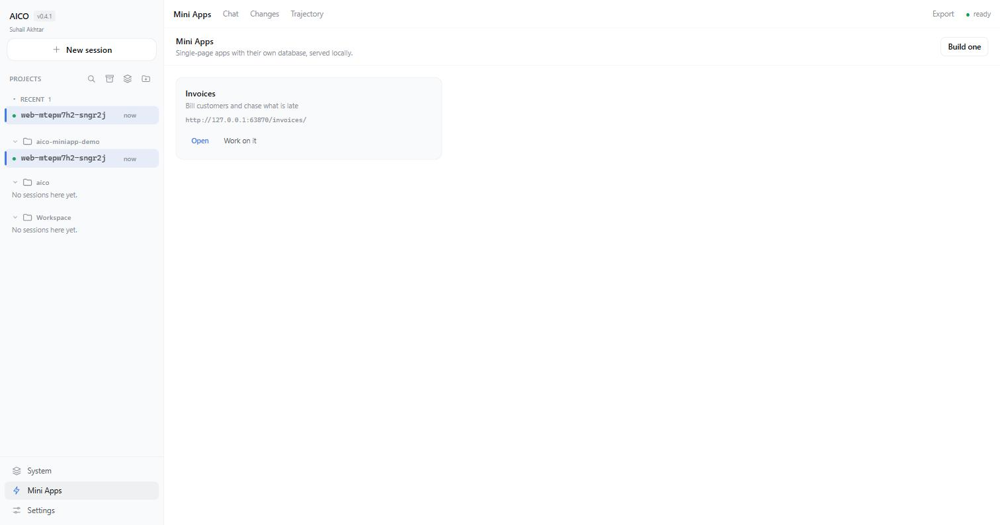

The AI coding agent that opens what it builds.
aico works in your terminal or a local web workspace. It keeps an append-only log of every turn instead of a chat buffer, and it will not call a job done on a page that throws when you load it.
$ npx github:suhail-akhtar/aico#v0.6.0 serve
Requires Node 22.5 or newer. Works with OpenAI, Anthropic, OpenRouter, Gemini, Z.AI and local Ollama.
A log, not a chat buffer
Most agent CLIs keep the conversation as a list of strings and re-send it every turn. aico keeps an append-only event log and derives each request from it. Nearly everything else here follows from that one decision.
| Because requests derive from a log… | You get |
|---|---|
| Tool calls and results stay structured across turns | The model can reason about what a tool returned three turns ago |
| The prompt prefix only ever grows | Provider caching actually hits — 79–91% measured |
| History is addressable by sequence number | Resume, fork a conversation, and compact without deleting |
| Input can be queued against a step boundary | Steer a run mid-flight instead of cancelling it |
| Every fact is an event | Replay, audit, and invariants that catch corruption |
1 request/header openai/gpt-5.6-terra tools=41
2 turn/start {"turn":1}
3 user/message "fix the failing test" src=human
4 step/start {"turn":1,"step":1}
5 assistant/message calls=1 usage=5537/69
6 tool/call Bash {"command":"node test.mjs"}
7 tool/result Bash -> "AssertionError…" <-seq6
8 step/end
…
27 turn/end {"kind":"completed"}It checks its own work
This exists because of a specific failure. Three models were asked for a single-file 3D space planner, and a keyword check scored two of them twelve features out of twelve. Opened in a browser, one threw on load and rendered nothing; the other was a shell — the toolbars were there, the app was not. Nothing in the loop had ever run the thing.
VerifyApp opens the page in a real browser and reports what a person
would hit: uncaught exceptions, console errors, failed requests, what actually
rendered — including whether a <canvas> was ever painted — and
whether named controls do anything when clicked.
FAILED — file:///…/index.html has 3 problem(s). This artifact is not finished.
Problems, worst first:
- uncaught: THREE is not defined
- 1 of 1 canvas element(s) were never drawn to
- "brand colour picker" does not work: set a new colour, and nothing changed
What rendered:
183 elements, 3 canvas, 0 svg, 12 interactive control(s)
canvas 300×240 — NEVER DRAWN TO
The verdict is not advisory. A turn that produced a web page cannot
end completed until a passing verdict exists for the file as it stands
now — so "built it, never opened it" and "verified, then edited" are both caught by
the loop rather than by your patience. The requirements it checks are read out of
your words, because a model that writes its own acceptance criteria writes
ones it has already met.
What else is in the box
Redirect a run without killing it
Type while it works and the message lands at the next step boundary. The turn is extended, not cancelled, so nothing it has learned is thrown away.
Look before it touches anything
The write tools are gone, not discouraged. You get a structured plan to approve, amend or decline — and sub-agents inherit the restriction.
Dev servers do not hang the turn
Commands that are not supposed to exit get backgrounded, with the pid and the URL they printed. A persistent shell remembers your cd.
One list of what is running
Agents, dev servers, schedules and watchers in one ledger that survives a restart. Set a spend ceiling or an idle timeout once and the platform enforces it.
Another AI can hand it work
aico mcp-serve speaks MCP on stdin and stdout — nothing listens, no port. Read-only until you say --allow-writes.
Layers that say what they enforce
Permission prompts with diffs, a bash classifier, an opt-in workspace sandbox, a repeat-call guard, and spend ceilings that include sub-agents.
17 types, and specs you write
Each with its own prompt and tool whitelist. Every child inherits its parent's settings, hooks, sandbox policy and spend caps.
2,273 offline assertions
No API key needed to run them. Plus 190 web-client checks, 35 Mini Apps checks over real HTTP, and live suites that drive real servers, real processes and real models.
Measured, not vibed
The agent was given a written spec, a visible 7-test suite it could
run, and asked to implement a token-bucket rate limiter. It was graded against a
hidden 23-test suite it never saw, aimed at the spec clauses the
visible tests do not cover — fractional accrual, monotonic-clock clamping,
TypeError contracts, Infinity semantics.
| gpt-5.6-luna | gpt-5.6-terra | |
|---|---|---|
| Wall clock | 488 s | 70 s |
| Steps / tool calls | 13 / 18 | 10 / 15 |
| Input tokens | 110,409 | 82,921 |
| Prompt-cache hit | 91% | 88% |
| Visible tests | 7 / 7 | 7 / 7 |
| Hidden tests | 23 / 23 | 23 / 23 |
Both at reasoningEffort: high. Two different implementations, both fully
correct on tests neither model saw. Reproduce it yourself with
npm run test:live — it costs money, because it calls real models.
A workspace, not just a prompt
aico serve starts a loopback server and opens a browser client against
it. The run belongs to the server, not the page: close the tab mid-turn and the work
carries on; reopen it and the session replays from its log with real tool results.

The web client
Sessions, projects, tool cards with diffs, plan and task panels, forking a chat from any message.
How it works → VisualsCharts, maths and diagrams
Answers that draw themselves — ECharts and Vega-Lite, KaTeX with chemistry, and 26 kinds of diagram.
See what it renders → Mini AppsSmall apps that persist
Ask for an invoice ledger and get a real one, with SQLite behind it, at its own local URL.
Read the design → VS CodeThe same workspace, in the editor
A thin extension: it embeds the workspace, asks about a selection with its file and lines, and keeps background work in the status bar.
What it does and does not do →Questions
Is aico free and open source?
Yes — MIT licensed, and there is no account, no telemetry and no hosted service in the middle. You pay whichever model provider you choose, directly, at their prices. Running it against a local Ollama model costs nothing at all.
How is it different from Claude Code or Cursor?
It is model-agnostic and local-first: you bring your own API key for Claude, GPT, Gemini, DeepSeek, GLM or a local model, and the whole thing runs on your machine. The design differences that matter are an append-only session log you can resume after a crash, a browser verification step that opens what it builds, and one ledger supervising everything running in the background. A fuller comparison is here, including where the alternatives are ahead.
Which AI models can it use?
OpenAI, Anthropic, OpenRouter, Google Gemini, Z.AI GLM, DeepSeek, any OpenAI-compatible endpoint, and local models through Ollama. The model name decides the provider, so switching model never means also remembering to switch provider. See Providers.
Does it work in the terminal, or does it need an editor?
Either. aico is a terminal agent; aico serve
starts a local web workspace on 127.0.0.1. There is also a
VS Code extension, but it is a thin
one — it embeds that same workspace and adds asking about a selection
and a status bar for background work. One engine drives all three
surfaces; none of them is a separate implementation, and there is no
inline completion.
Can another AI use aico?
Yes. aico mcp-serve speaks MCP over stdin and stdout, so
Claude Code or any MCP client can hand it a task and collect the result.
Nothing listens on a port, and submitted work is read-only unless you
start it with --allow-writes, which the
automation page explains in full.
How do I stop an AI agent running up a bill?
Set a spend ceiling, a deadline or an idle timeout once, and the platform enforces it — including for sub-agents and background work. Cost is checked the moment it changes rather than on a timer, and the supervision page covers every limit.
What happens if it crashes in the middle of a task?
The session is an append-only event log, so it replays with real tool results rather than a summary. Anything that was running is reconciled at startup: a background process still alive keeps running, and everything else is reported as interrupted rather than vanishing.
Is it safe to let it run shell commands?
There are layers — per-tool permission prompts with diffs, a bash classifier, plan mode that removes the write tools entirely, and spend caps. The project states the limit plainly rather than claiming a sandbox it does not have: the opt-in sandbox governs aico's own file tools fully and spawned processes only partially.
Honest limitations
The things it does not do, in the project's own words.
- Bash is not confined. The sandbox governs aico's own file tools completely and spawned processes not at all. Landlock and Seatbelt backends would close this; they are not written.
- Verification covers the web.
VerifyAppopens HTML in a browser. A CLI tool, a library or a server has no equivalent gate. - A check can be shallow. Requirements coverage forces a check per behaviour your brief named; it cannot judge whether the behaviour is any good. It closes "never built it" and "never looked", not "built it badly".
- Terminal is a pipe, not a pseudo-terminal. State persists; programs that demand a TTY do not work, and it says so rather than hanging.
- Not a sandbox for untrusted code. Review what it runs.
Try it
$ npx github:suhail-akhtar/aico#v0.6.0 serve
Nothing to install first, and no account to make. The install page covers running from source, pinning a version, and where to put your API key.